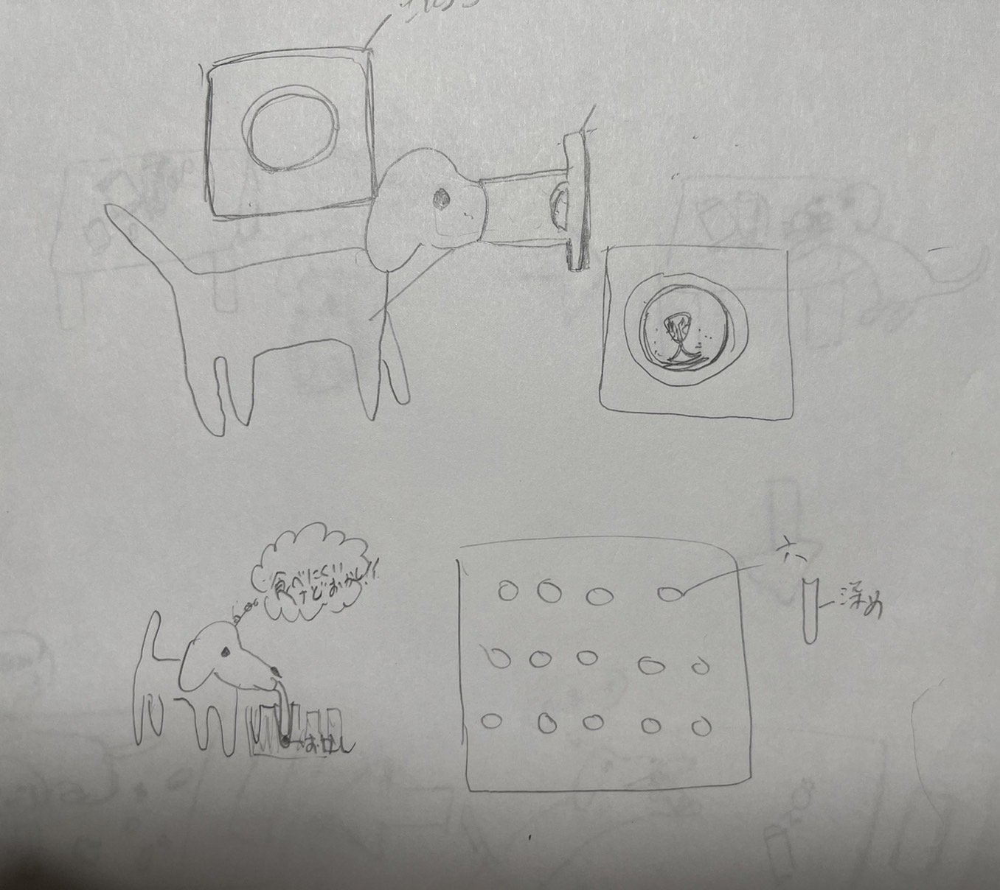

犬を満足させる皿
↓↓犬を満足させる皿を作った経緯↓↓
私の犬はなぜか毎回食べ物を盗み食いするときに必ずベッドの上で食べるのだ。
そこで根本的に盗み食いを防止するにはそうしたら良いのかを考え、犬のご飯の満足度を高めるという発想に至った。
ご飯の満足度を高めるには人間がご飯を食べるときに時間をかけるほどお腹いっぱいになるように、犬も時間を毛けるほど満腹度が高まると考えた。 そのため、犬が時間をかけてご飯を食べる方法に着目した。

そして満足度を高めるために、あえてご飯が食べにくい皿を作ることにした。